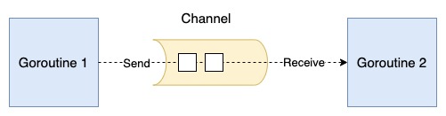
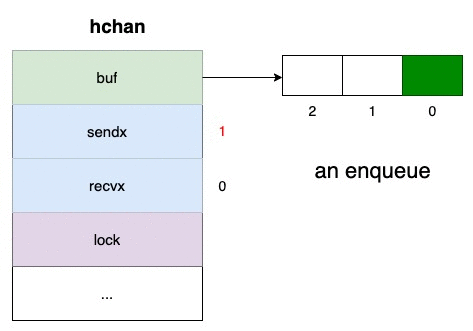
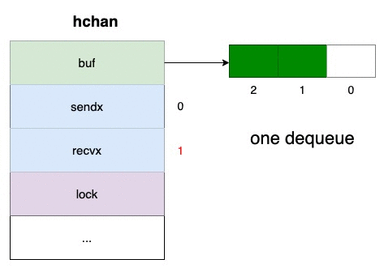
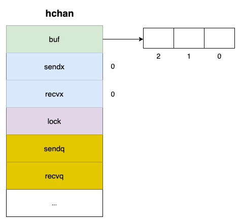
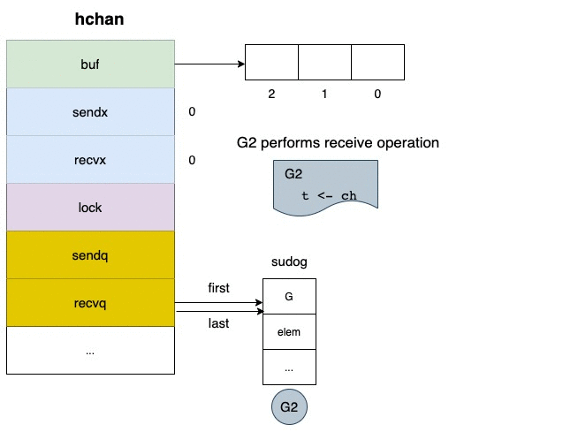
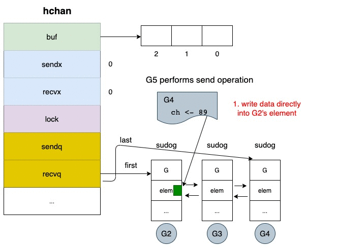
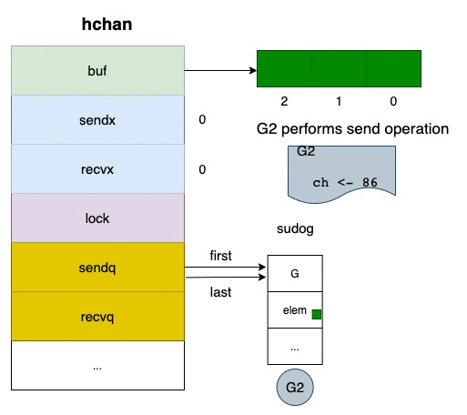
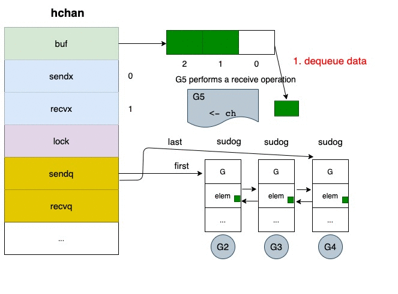

了解Golang通道的内部工作原理

goroutine(协程)和通道
goroutine是一个轻量级的用户空间线程，由Go运行时管理。它同时执行任务，可能是并行的。
通道是用于goroutine之间的通信。
在这篇文章中，我们将深入了解通道的内部运作和它的发送/接收操作。
缓冲通道
我们先创建一个缓冲通道用于下面的解释。
1
ch := make(chan int, 3)
上面的语句创建了一个缓冲通道，最多可以容纳 3 个 int 类型的值。
在底层，make函数 在堆上分配了一个 hchan 结构并返回一个指向它的指针。 以下是 hchan 结构的一些字段及其解释。

some fields of hchan struct
1
2
3
4
5
6
type hchan struct { buf unsafe.Pointer
sendx uint
recvx uint
lock mutex
... // other fields}
buf是一个指向数组的指针，它维护着一个循环队列。sendx是数组中发送元素的索引recvx是收到的元素在数组中的索引lock确保通道的读写是一个原子性的操作
非阻塞的发送和接收
当通道未满时，我们可以在循环队列的后面插入元素，而不会有阻塞。
1
2
3
// G1 sends three elements into the channel, capicity = 3ch <- elem1
ch <- elem2
ch <- elem3

当通道不是空的时候，我们可以从循环队列的前面接收元素，而不会有阻塞。
1
2
3
// G2 receive three elements from the channel, capicity = 3<- ch
<- ch
<- ch

阻塞
在处理goroutine之间的阻塞时，其他字段也很重要。让我们看一下。

some fields of hchan struct
recvq(链表)存储试图在通道上读取数据时被阻塞的goroutines。sendq(链表) 存储试图从通道发送数据时被阻塞的goroutines。
Remember that Both of
recqandsendqare linked list.
1
2
3
4
5
6
7
8
9
10
11
12
13
14
15
16
type hchan struct { buf unsafe.Pointer
sendx uint
recvx uint
lock mutex
sendq waitq
recvq waitq ... // more fields}type waitq struct {
first *sudog
last *sudog
}// pseudo goroutine
type sudog struct {
g *g
elem unsafe.Pointer
next *sudog
prev *sudog
... c *hchan}
从空信道进行接收
当通道为空时，一个接收操作会导致当前的协程被阻塞。所有被阻塞的协程都存储在recvq队列中。

阻塞的是goroutines，但不是OS线程。
那么，被阻塞的goroutine何时会被恢复呢？
答案是当一个新的goroutine在通道上执行发送操作时。
下面是详细情况。
- 一个新的goroutine将新数据直接复制到第一个等待的goroutine的元素中
- 第一个等待的goroutine从
recvq中弹出。 - 运行时调度器设置被弹出的
goroutine为可运行状态，并将其放在 “运行队列 “中。然后，被阻塞的程序被触发并准备再次运行。

在”满”通道上进行发送
当通道满了，接下来的发送操作会阻塞各自的goroutine。所有被阻塞的goroutines都存储在sendq队列中。
(没有缓冲区或者说缓冲区大小为0的通道, 和缓冲区满了的通道情况一样)

直到另一个goroutine的接收，被阻塞的goroutine被恢复。下面是详细情况。
- 当一个新的goroutine在通道上执行接收操作时，缓冲区的第一个元素被移除
- 第一个等待的goroutine从
sendq弹出。 - 弹出的goroutine的元素被复制到缓冲区中
- 运行时调度器设置被弹出的goroutine为可运行状态，并将其放在 “运行队列 “中。然后，被阻塞的程序被触发并准备再次运行。

通道是go中一个非常强大和有趣的机制。希望这篇文章能够解释围棋中通道的基本工作原理。
参考文章
- Diving Deep Into The Golang Channels
- Concurrency And Parallelism in Golang
- Go a Tale of Concurrency a Beginners Guide
另外, 这篇文章也不错 https://draveness.me/golang/docs/part3-runtime/ch06-concurrency/golang-channel/